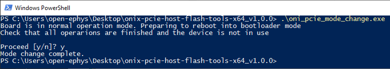

Download the latest oni-repl Console Application and unzip it. Navigate to this
location using a console (e.g. PowerShell).
Note
For a complete description of this program, have a look at its
usage guide
Verify your PCIe Host Hardware version by running oni-repl and typing “H”
into the command prompt. This will print a list of all hubs in the current
ONI context, one of which will be the PCIe Host.
Make sure that the host firmware images matches the hardware version
from the last step or the update will not work properly.
Download the PCIe Host Updater utilities package and unzip
it. Navigate to this folder using a console.
Run the oni_pcie_mode_change command to put the PCIe host into bootloader
mode.
$ oni_pcie_mode_change.exe

Open the Windows Device Manager by typing “device manager” into the windows
search bar.Find the RIFFA device you are going to update in the device tree.
Right click on the RIFFA device and select inactivate.
If prompted to do so, or if the device has a small yellow triangle icon
next to it, you will need to reboot your computer to finish the
process.
Return to the console and run the oni_pcie_flash_image command using the
.bin file downloaded in step 4 and the index of the PCIe host device you
want to update. If you only have a single PCIe Host board, index can be
specified as 0 or omitted.
{kind=link}
{kind=link}